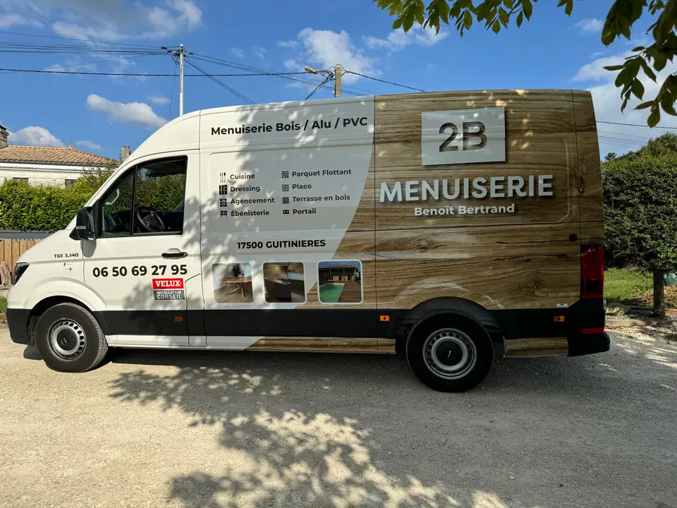
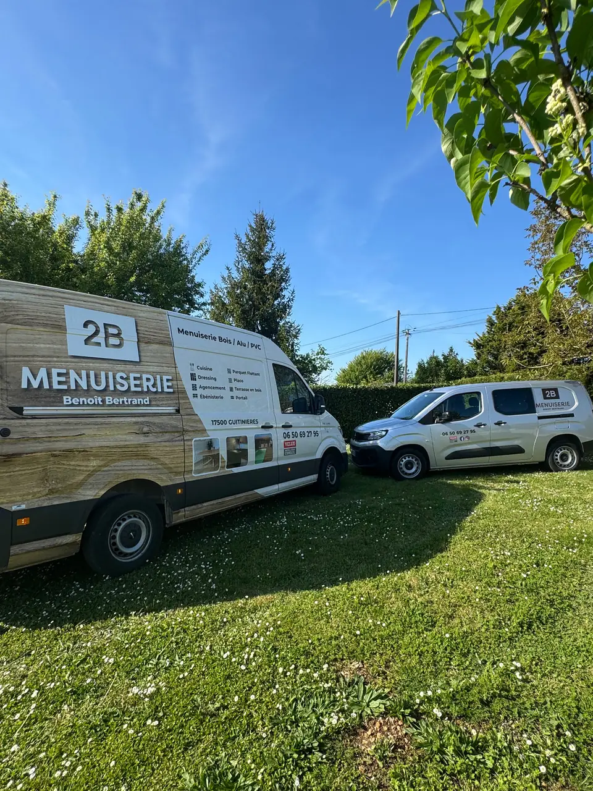

Création de l'atelier
Benoît Bertrand, menuisier-ébéniste à Guitinières
2B Menuiserie, c'est avant tout l'histoire d'un artisan passionné, qui a choisi d'exercer son métier dans ce qu'il a de plus noble : créer des pièces uniques, durables et à l'image de ses clients.

Un métier fait main, à l'échelle humaine
Depuis 2020, j'ai fait le choix de fonder cette entreprise pour exercer mon métier comme je l'aime. Menuisier et ébéniste de formation, j'ai à cœur de proposer un travail soigné, fait main, dans le respect du bois et du métier.
Ce que je vous propose, ce n'est pas une simple prestation, c'est un véritable accompagnement. Je conçois, réalise et installe chaque projet avec précision, exigence et une grande attention aux détails.
Chez moi, tout est pensé à l'échelle humaine : pas de production en série, pas de fabrication impersonnelle. Chaque pièce prend forme à l'atelier, dans un esprit artisanal et sur mesure.
Votre projet, vos envies, votre espace
Qu'il s'agisse d'une cuisine, d'un dressing, d'un meuble d'agencement, d'une terrasse ou d'un portail, je m'adapte à vos besoins. Mon objectif est simple : créer des réalisations fonctionnelles, esthétiques et solides, que vous aurez plaisir à utiliser au quotidien.

Nos engagements
Pourquoi choisir 2B Menuiserie ?
Un artisan local à votre écoute
Installé à Guitinières, je connais les maisons de la région, la pierre, les charpentes et les contraintes de chacune.
Un accompagnement à chaque étape
Vous avez un seul interlocuteur, du premier rendez-vous au dernier réglage. Pas d'intermédiaire.
Des matériaux durables
Je sélectionne des bois et des fournitures de qualité, beaux aujourd'hui et solides dans vingt ans.
Un savoir-faire reconnu
Menuisier et ébéniste de formation : la précision du meuble appliquée à tous les chantiers.
Ce qui vous ressemble
Une vraie écoute pour créer des pièces à votre image, et non l'inverse.
Qualité garantie
Je ne considère un chantier terminé que lorsque vous êtes pleinement satisfait du résultat.

Savoir-faire français
Particuliers et professionnels, de A à Z
Maison individuelle, résidence secondaire, gîte, commerce ou bureau : j'accompagne chaque client avec le même sérieux et la même exigence.
Découvrir les prestationsDevis gratuit
Un projet en tête ? Parlons-en.
Chaque projet commence par une écoute attentive. Je me déplace gratuitement pour voir votre pièce, prendre les cotes et vous remettre un devis clair.